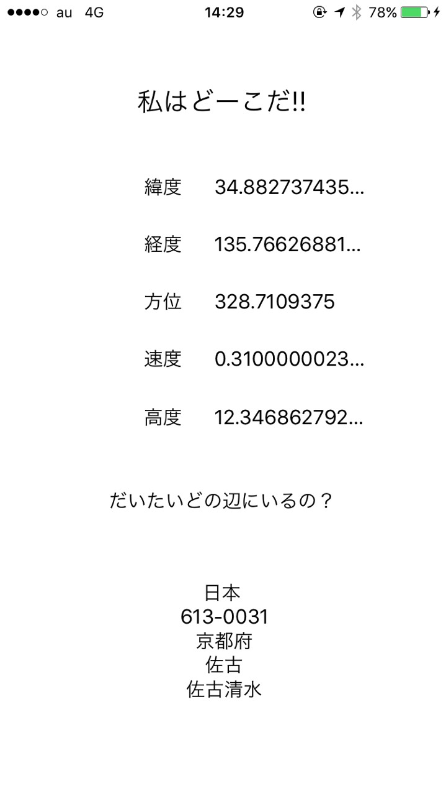
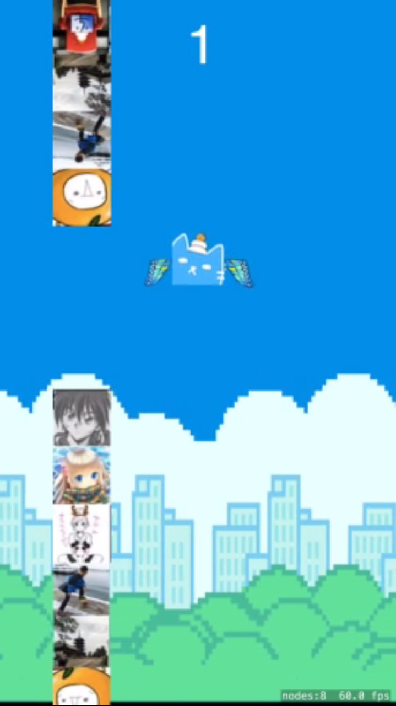

このツイートが原因
30分もたたずに21いいねがきました．
ってことで，できるとは到底思わないけど，1月5日までに21個のクソアプリを生成します．
Swiftとか「勉強いつかしてみたいな？」って数日前から思っていた人の思いつきですので，本当にクソアプリです．温かい目で見てください．
体重を入力すると，アインシュタインの特殊相対性理論を使って，その人が持っているエネルギーを計算してくれるアプリ．原発何基文に相当するかも計算してくれる．詳細

乱数で0〜100が生成されるので，できるだけ少ない回数でテストの点数が点数が何点なのかを当てるゲーム．入力したら，「高いよ，低いよ，あってるよ」ってのを教えてくれる．詳細

ボタンを押すとカウントが上がり，「3の倍数もしくは3の付く数字の時にアホになり，5の倍数もしくは5の付く数字の時に世界のナベアツさんがナルシストになる」というアプリ．詳細

LT用タイマーアプリです．残り時間に応じてぱちおさんが小さくなっていきます．スタート・ストップ・リセットが出来ます．LT終了時に別のぱちおさんの画像が出現します．詳細
スライダーでRGBの値をいじって確認するアプリ．指定したやつと似た色も一緒に表示します．詳細
To Do Listです．アプリを閉じても追加したタスクは保存されます．終わったタスクはスワイプで削除できる．詳細
GithubとQiita，はてなブックマークが一括でみれるアプリ．登録できるサイトは変更可能．詳細
地域を指定して，天気予報をみれるアプリ．1〜3日目，4〜6日目，7〜10日目みたいに，期間に分けて天気予報を表示できる．詳細
ネタが尽きてきた... コマ撮りアニメでエイリアンがダンスするアプリ．詳細
TwtiterとLINEを選んで，3目ならべをするアプリ．2人プレイ専用．もちろん勝敗判定もある．詳細
リアルタイムで現在位置をマッピングしていくことにより，移動経路がわかるアプリ．詳細
自分の緯度・経度・移動速度・方向・高度を表示し，周辺住所を割り出して表示するアプリ．詳細

シェイクするとランダムで0〜10000円がもらえるアプリ．3%の確率で死んでしまうので，死ぬ前にやめておこう．たまにお金2倍になる．詳細
こなつくん (@Konatsu598)っていう友達が作った曲専用プレイヤー．シャッフルとか，一時停止，時間指定での再生，音量調節ができる．詳細
前回の天気予報アプリはそのままサイトを貼り付けただけだが，今回はwebのデータを加工して必要なデータだけを貼り付けている．天気予報が観れるアプリ．詳細
GoogleのAPIを使ってブログデータをJSONで取している．タイトルと内容をみれるブログリーダアプリ．オフラインでも記事が読めるようにCoreData使用.詳細
クレイジークレイジー(´・∀・｀)bot(@kusorep_crazy)へクソ画像を送りつけるためだけのアプリ。ライブラリの画像も写真で撮ったばかりの画像も遅れる．ツイッター連携あり．詳細
iOSでARをやってみた．とは言えがっつり作ってる時間はないので，ほぼサンプルを動かしただけですが... Vuforia使ってます．詳細
18個目のアプリとやってることはほぼ同じ．立体的なARマーカを検出して，その周りでどんぶりを回転させるもの．詳細
行って楽しかった場所を記録しておけるアプリ．住所と一言コメントを記録しておける．登録は2秒その場所をタップするだけで簡単に行える．詳細
お嬢(@ottosan884)に羽が生えて，障害物(フォロワー)を避けていくゲーム．タップすると少し上に上がります．放置すると重力で落ちていきます．詳細
